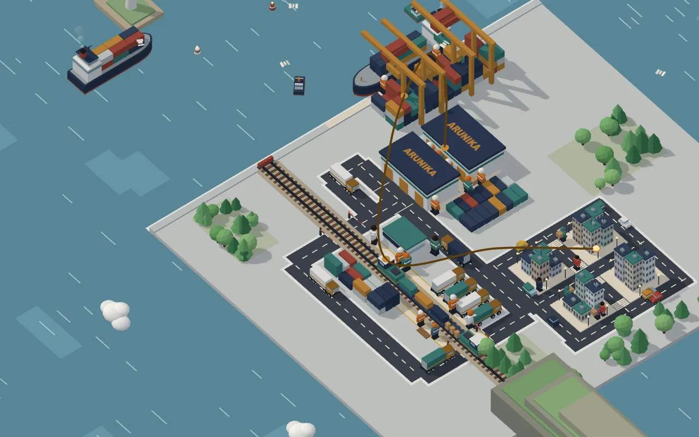

Tahap 1 · Gudang
Paket mulai dari rak yang tercatat
Gudang 38.600 m² mencatat stok per rak. Pesanan masuk sebelum pukul 14.00 dikemas hari itu juga.
Rak B-142.480 dus · terisi 86%
Gulir pelan, kamera ikut terbang
Tahap 2 · Pelabuhan
Kontainer naik kapal antarpulau
Kontainer 20 dan 40 kaki berangkat dari pelabuhan utama dan dibongkar di dermaga tujuan.
KM Arunika 3Berangkat 06.30 · tiba besok 17.00
Tahap 3 · Kargo darat
Truk ke Jawa, Bali, dan Sumatra
Truk satu muatan penuh (FTL) atau muatan gabungan (LTL), sesuai ukuran kiriman Anda.
FTL atau LTLEstimasi 2–4 hari kerja
Tahap 4 · Kereta barang
Muatan besar disambung dengan kereta
Untuk jarak jauh, kontainer pindah ke gerbong. Lebih hemat dan jadwalnya tetap.
Gerbong 5 dari 5Terminal kereta → kota tujuan
Tahap 5 · Last-mile
Kurir sampai pintu pembeli
Van mengantar paket ke 112 kota. Pembeli melacak statusnya dari nomor resi.
ARK-0042-117Kurir 2 km dari alamat · tiba 14.20
Jaringan lengkap
Klien melihat jaringannya, bukan hanya membaca daftarnya
- 11tahun beroperasi
- 112kota tujuan
- 38.600 m²luas gudang
Proyek konsep: perusahaan dan angka di halaman ini fiktif, hanya contoh.